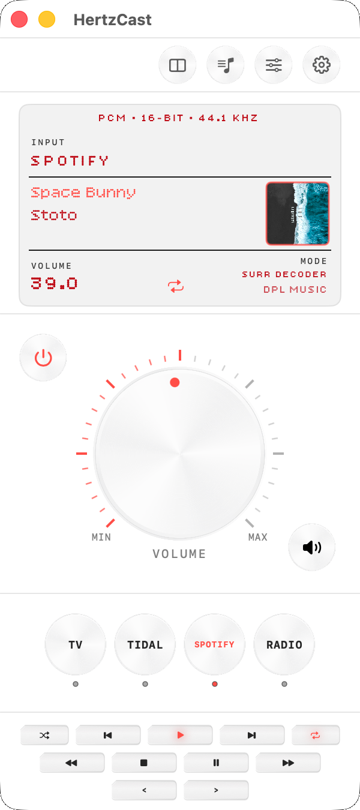
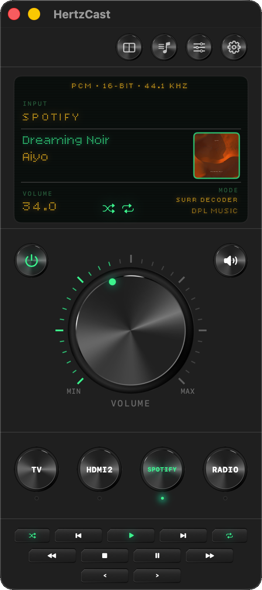
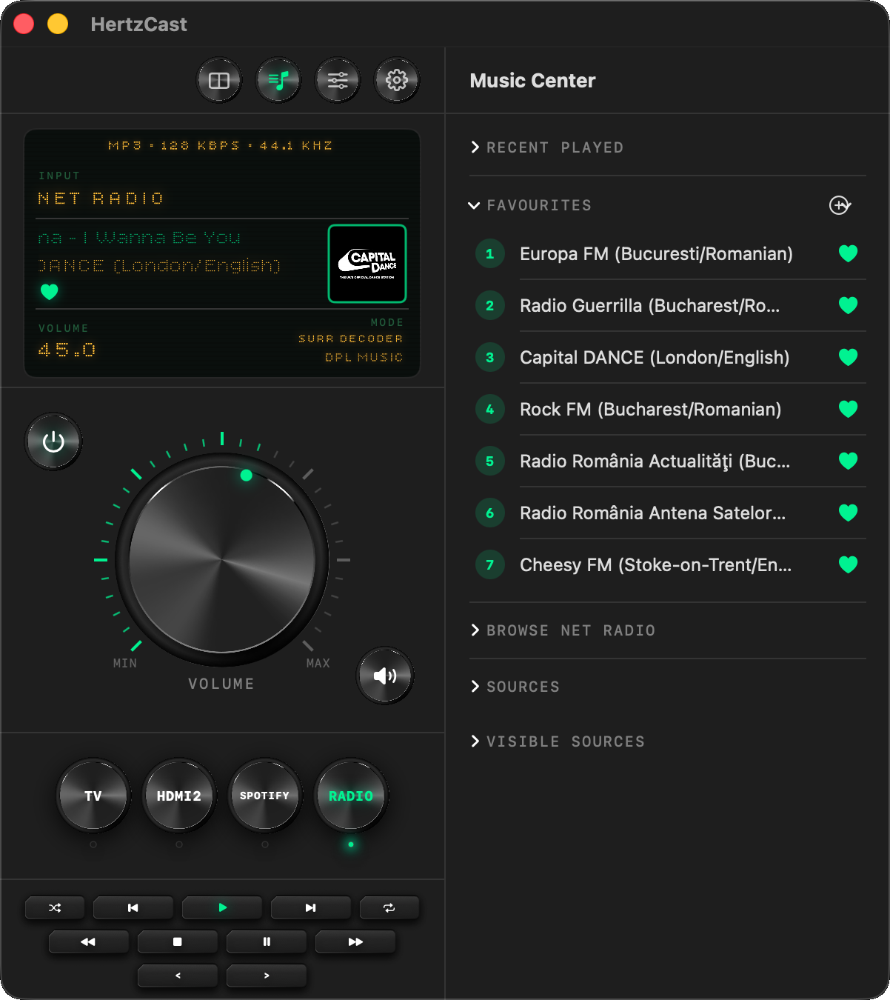
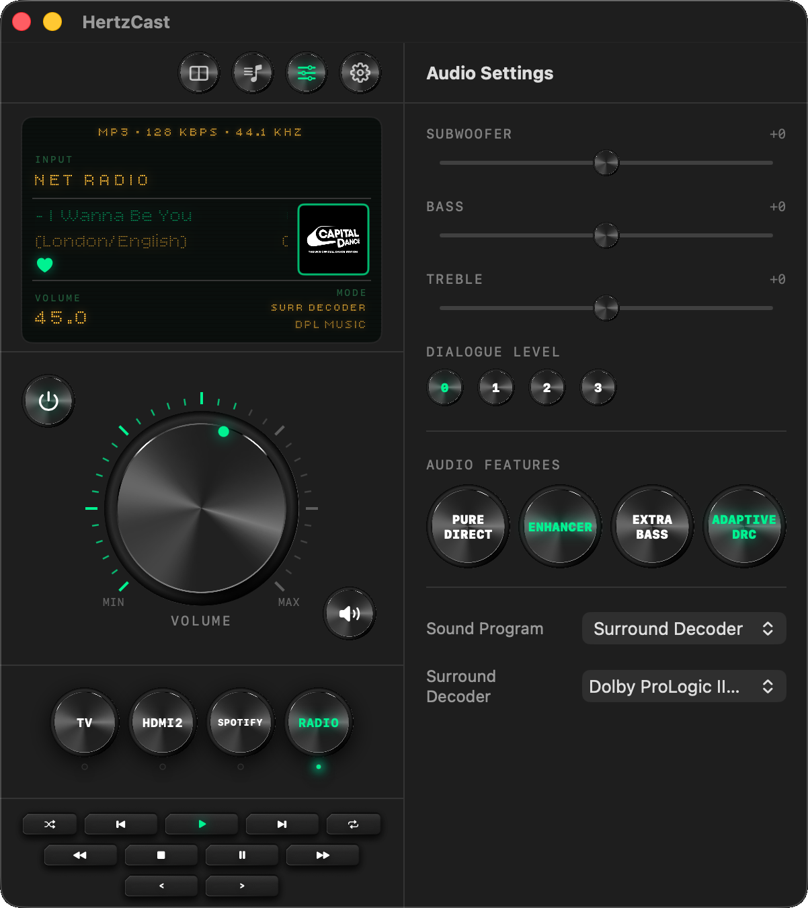
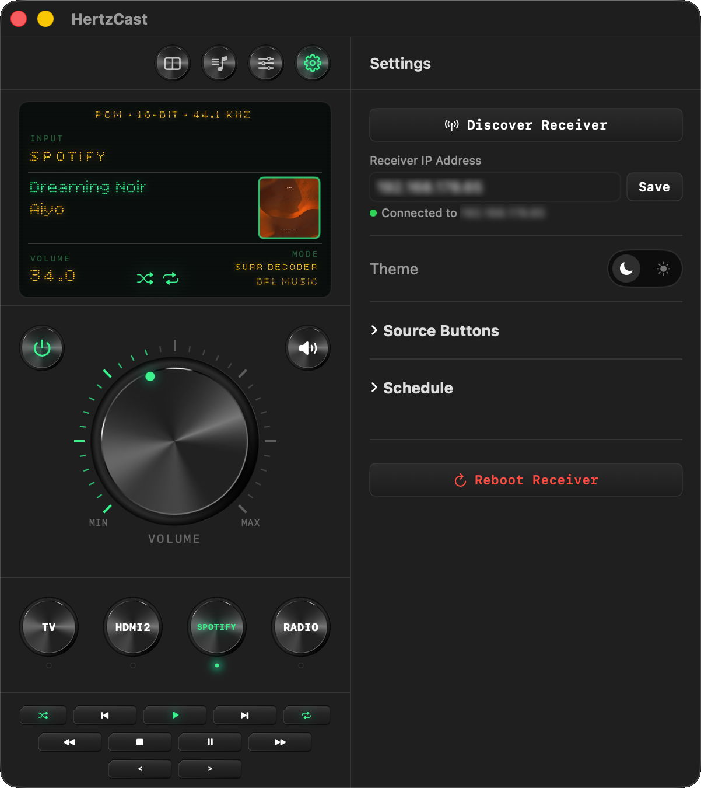
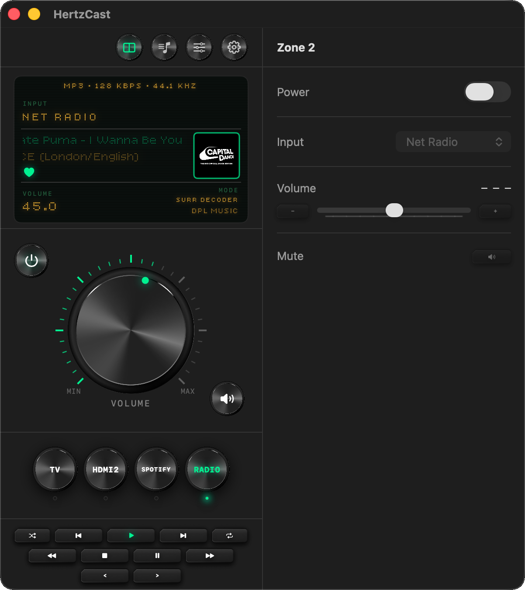
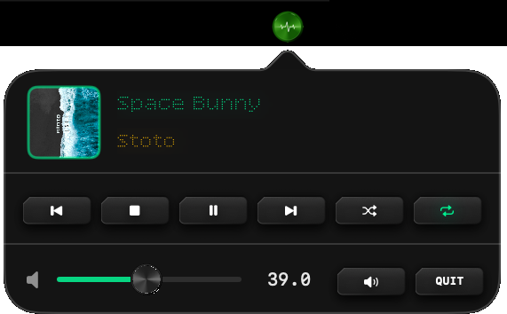

HertzCast puts your Yamaha receiver on your Mac — a full retro-style interface with a real rotating volume knob, transport controls, Net Radio browsing, audio settings, and a mini player in the menu bar for when you don't even want to open the app. Everything your receiver can do, available from your keyboard.
No subscription. No cloud. No account.
Switch between green phosphor and clean red accent with a single toggle. Both themes are fully polished.

From volume and source switching to Net Radio browsing and audio tuning — HertzCast covers it all.
Input, volume in dB, sound mode, album art, scrolling track names.

Metallic rotating knob — drag in a circle or use the scroll wheel.

Browse Net Radio, manage favourites, view recently played stations.

Bass, treble, subwoofer, Pure Direct, sound programs and more.

Morning Alarm and Auto Off — power on or standby on any schedule.

Secondary zone control and quick access from the menu bar.

Every feature maps to something real your Yamaha can do.
Real-time state: input, volume, sound mode, album art, scrolling track names.
Circular drag or scroll wheel. Exactly like the real thing.
Play, pause, stop, skip, shuffle, repeat. Adapts to the active source.
Browse the full directory, save favourites, view recently played.
Morning Alarm, Auto Off, and Sleep Timer — fully automated.
Independent power, input, volume and mute for a second audio zone.
Bass, treble, subwoofer, Pure Direct, Enhancer, full sound programs.
Playback and volume from the menu bar — no need to open the app.
A few things to verify: